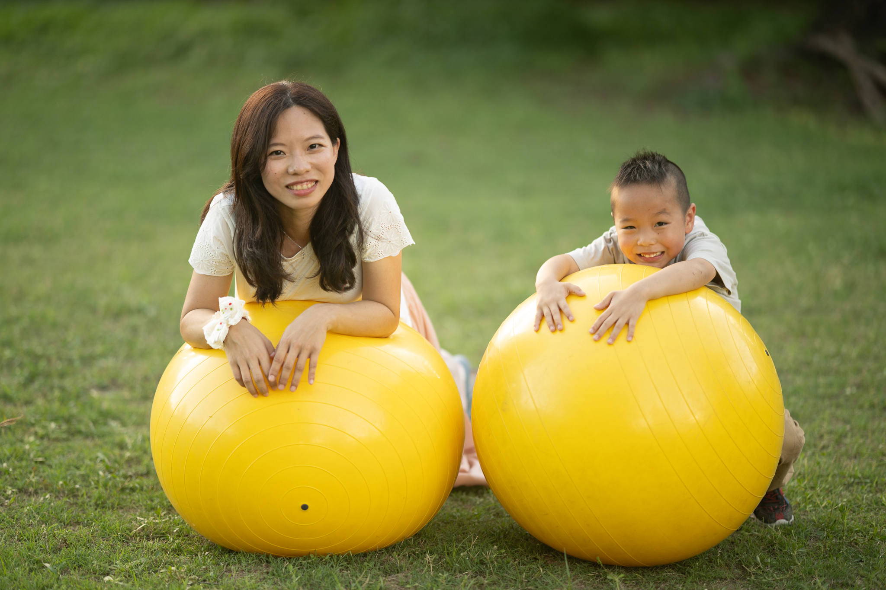

我是許立懿，是臨床心理師、嬰幼兒睡眠顧問、也是三位孩子的媽媽。
曾在兒童臨床心理中心擔任心理師，具備嬰幼兒發展評估、親職教養諮詢、以及孕產期/新手父母心理支持的專業知識，也在平時育兒的生活中，持續鍛鍊並累積正向親子互動的技能。期待幫助更多家庭建立健康的睡眠習慣。
臨床心理師 (心理字第001477號)
好眠師 (2025年認證班畢業學員)
國際兒童睡眠顧問學會 (IACSC) 會員
國立政治大學 臨床心理學系碩士
國立政治大學 心理學系學士
樂樂身心診所 臨床心理師
好眠寶寶 嬰幼兒睡眠顧問
國立政治大學身心健康中心 臨床心理師
台北馬偕醫院兒童心智科 臨床心理師
臺大醫院臨床心理中心 臨床心理師
115年度 『親職講座：孩子睡得好，爸媽安心睡：陪孩子打造健康睡眠習慣』－安平靈糧堂
115年度 『家長成長團體：家、關係、與睡眠』－台南東區親子悠遊館
115年度 『親職講座：陪孩子打造健康睡眠習慣』－銘傳大學睡眠實驗室
115年度 『專職人員研習：為嬰幼兒打造健康睡眠習慣』－廷羽兒護
114年度 『專職人員研習：為嬰幼兒打造健康睡眠習慣』－台灣助產學會母嬰多元照護研習會
114年度 『親職講座：破解疲累的生活步調』－嘉義市孕產婦心理健康促進活動
113年度 『親職講座：返家育兒作戰－家庭生活調適與嬰幼兒作息認識』－嘉基產後護理之家
112年度 『親職講座：返家育兒作戰－家庭生活調適與嬰幼兒作息認識』－嘉基產後護理之家
112年度 『兩性講座：談新婚衝突』－台北靈糧堂
111年度 『志工培訓：兒童遊戲發展與技巧』－台南東區親子悠遊館
111年度 『托育人員在職訓練：兒童遊戲發展與活動設計』－嘉義市助產師助產士公會
111年度 『托育人員在職訓練：兒童依附關係』－嘉義市助產師助產士公會
111年度 『教師研習：自閉症學生的正向互動與親師溝通』－嘉義縣大林國小
110年度 『志工培訓：認識樂齡長者心理』－逆風高飛AO社區服務協會
110年度 『教師研習：特殊生溝通技巧』－逆轉聯盟協會
110年度 『教師研習：自閉症幼兒遊戲治療』－嘉義縣特教資源中心
109年度 『兩性講座：兩性婚前交友』－逆風高飛AO社區服務協會
109年度 『親職講座：談青少年叛逆期』－逆風高飛AO社區服務協會
107年度 『志工培訓：不同障礙類別的溝通技巧』－國立政治大學資源教室
105年度 『教師研習：談自閉症類疾患』－新北市淡水文化國小
105年度 『親職講座：培養孩子挫折耐受力』－明德長老教會
許立懿（2026年09月）。 睡眠訊號不只是打哈欠：從大腦發展理解孩子的疲憊感 — 好眠寶寶
許立懿（2025年10月）。 睡眠訓練＝放任哭？如何用溫柔又一致的方式陪孩子入睡 — 親子天下
許立懿（2025年07月）。 「明明累到哭，卻怎麼都不睡？」3步驟培養自行入睡的孩子 — 親子天下
許立懿（2023年10月）。 在校表現好在家變個人？談小孩的「放學後自制力崩潰」— 親子天下
許立懿（2015）。自閉症類疾患兒童自閉症狀變化與認知及適應行為關係之縱貫研究。國立政治大學臨床心理學系研究所（未出版博碩士論文），台北市。
姜忠信、*許立懿、李宜融、吳進欽、朱慶琳、侯育銘（2015）。自閉症類群兒童的6年追蹤：以診斷及症狀發展為例。臨床心理學刊，9(2)，7-8。
本來我覺得我的孩子是那種倔強無法改變的類型，因為我有自行試過睡眠引導但卻沒有改善，所以我並沒有抱有很高的期待。加上家裡人的各種嘗試添加建議，讓我覺得更加混亂，焦慮和不知所 措。後來我才發現，是我的方法操作並不完善的問題。
其實孩子的學習能力非常強，我應該更信任她，不應該隨意給她貼上倔強這種標籤。睡眠引導中遇到的種種問題，通過 Joyce 的指導，都一一得到解答。 Joyce專業而又溫柔的諮詢，不僅僅是在睡眠層面，更在她擅長的兒童心理方面，讓本來非常緊張的我和我先生，開始了解我們的孩子並且讓我們自己也平靜下來。
從之前抱著“就試試看吧即使沒用至少我能跟人說我試過了”的心態，居然能達到比我想像中好得多的成果：孩子學會了自行入睡和安撫，入睡前不再抵抗，不再掙扎需要哄睡（雖然我們以前的哄睡也沒有用），幾乎每晚都能睡一整夜，即使偶爾夜醒哭泣，也能自己安撫睡回去。她真的終於成長了。
其實，每一位寶寶都可以成長，我們需要的是正確的方式。謝謝好眠師 Joyce 教會我們的，也讓我們做父母的成長了。 目前市面上用中文普及關於寶寶科學睡眠的資訊非常少，而能同時兼顧科學睡眠又理解亞洲父母“比較親密型”的育兒文化的好眠師團隊，更是鳳毛麟角。我感覺亞洲父母普遍對寶寶睡眠存在很大的誤區。
我衷心希望好眠團隊能持續下去，幫助更多使用中文的人了解到科學睡眠。這不僅是在睡眠質量上的改變，更是讓父母對科學育兒層面有所思考。謝謝你們！
謝謝 Joyce 這三週的陪伴與支持。
我們是新手爸媽，過去在寶寶睡眠上有很多困擾，包含寶寶需要高強度哄睡、夜醒、夜奶、早醒、短小睡等。長時間下來，直接影響到我們三個人的生活品質。
一開始接觸睡眠引導時，我內心有很多焦慮與抗拒，尤其很擔心改變方式會讓寶寶大哭、沒有安全感。但很慶幸遇到 Joyce，她的引導方式和我原本想像的不一樣。她不是單純要求我們「訓練寶寶睡覺」，而是從很多面向一起預備與調整，包括睡眠環境、觀察寶寶的生理節奏、哄睡降級、以及父母的心理狀態等。
她會細心觀察、陪伴我們一步一步調整，等各方面都準備好之後，再溫和地開始引導。 而實際開始後，過程比我原本想像中好很多。看到寶寶慢慢建立更好的睡眠狀態，我們也重新找回了家庭生活的平衡。現在寶寶睡得更穩定，清醒時間的精神跟心情也變得更 好，而我和先生不只生活品質提升，也有更多心力去享受陪伴寶寶的時間。
真的非常感謝 Joyce 這三週的專業陪伴。她不只專業、回覆迅速，也非常溫暖。不只照顧寶寶的睡眠，也照顧父母的感受、對於我的各種問題也都很用心仔細的回覆，能遇到 Joyce 真是太幸運了！
對於希望改善寶寶睡眠問題的家庭，我非常推薦 Joyce。
大寶時期就很常看好眠寶寶的資訊分享，但從沒想過自己會在二寶走入睡眠訓練。
我們家的狀況較多，不但需要大人小孩同房，還要配合在保母家的作息，實在不好搞啊。好在 Joyce 很即時地不斷調整，幫我們解決問題，最大的感恩莫過於自己買了三週方案。
孩子的月齡剛好在小睡轉換期，Joyce 陪我們不斷試錯，比起一次到位，我覺得有顧問期間把可能發生的狀況都走一遍，更有價值！不然等到結束之後才發生狀況，也沒有足夠的 database 應對。
過程中，Joyce 非常有耐心與認真，不斷開會討論修正。我們覺得 CP 值也太高了吧！更重要的是，Joyce 的同理，常常接住我們崩潰的情緒（不是睡訓就不會崩潰）。常常挫敗地寫完紀錄表，但看完 Joyce的回覆就好很多。 這段過程除了給寶寶機會以外，我覺得更像是父母也在認清自己與穩住自己的一趟旅程。
Joyce 的肯定與理解，加上身為三寶媽，無疑讓他為家長（與家庭）的思考更全全面面。
我們剛開始還蠻無助的，長期晚上4到6次的夜醒，都要馬上醒來給寶寶奶嘴才會睡回去。因為早上都要上班，我跟太太只能用值班的方式一人陪寶寶睡一天！實在太困擾了並且非常急著要解決頻繁夜醒的問題，上網找了無數的資料卻不知道該哪個是對的、哪個適合寶寶、怎麼實行。
因為太急了，好眠師也沒得選，只剩 Joyce 可以預約！ 在面談後 Joyce 迅速掌握寶寶的狀況制定出適合寶寶的作息，滾動式彈性調整，最重要的是我覺得 Joyce 很擅長接住我們的不安情緒，讓我們知道自己正在做適合寶寶的事，讓我們更堅定地執行計劃。
從剛開始覺得沒得選，到後來覺得好險是 Joyce！她不止是我們的顧問，更像是我們與寶寶的好朋友！ 寶寶跟我們達成目標的時間出乎意料的快！本來睡過夜的夢想達成就算了，還直接進階分房跟出遊！中間偶有亂流 Joyce 都能掌握問題提出解決方案。在最後也提出畢業後可能遇到的問題與建議。
這段期間累積的知識與經驗讓我跟我太太有信心面對之後寶寶有可能遇到的睡眠問題，因為我們知道就算如果遇到困難我們還是可以回頭找我們最堅強的睡眠後盾 Joyce！
一開始抱著試試看的心態報名訓練，沒想到本來夜醒無數次的寶寶真的可以睡過夜了！！
爸爸媽媽有了自己的時間，在育兒的路上輕鬆許多。 睡眠訓練真的不容易，有時候好不容易往好的方向發展時，又出現了新的問題，幸好有 Joyce 的陪伴&建議，我們才可以走到現在。
我的問題很多，本來擔心不是即時通訊，如果遇到問題怎麼辦？但整個溝通比我想像中的還要順暢，而 Joyce 像朋友一樣，關心我的身心狀態，並適時地領導我、鼓勵我，才能走完這三周。看到我家寶寶慢慢進步，爸爸媽媽感到欣慰，謝謝 Joyce。
我很感謝立懿願意輔導我們！因為對小孩睡眠習慣/能力倒退感到焦慮，原本他可以好好在床裡睡覺，突然間很排斥床。諮詢睡眠顧問時也擔心突然要讓小孩練習回到自己在床裡面睡覺，怕會讓他心理受創。
但是立懿非常有耐心且願意給我們時間去跟小孩溝通，讓我安心很多！立懿也提供我非常多有用的方法跟小孩溝通，以及教我如何把孩子的睡覺環境安排得更安全。過程中小孩的接受度超過我跟先生預期的。
現在孩子已經不會看到嬰兒床就崩潰，也可以在嬰兒床裡安心睡覺，就算醒來或是睡前有點情緒也不會要從床裡爬出來了！真的覺得很感動！
我曾經在寶寶六個月大時，自己嘗試讓他練習自主入睡，那一天成功入睡，但大人回房後大哭到大家都無法睡覺，最後只能抱起來安撫，又開始無止盡的哄睡。
現在寶寶十個月大，從原本的小睡、夜晚長睡眠都需要有大人哄睡、陪睡、無法自行接覺跟夜醒5-6次，經過半個月的練習後，可以自己在嬰兒床自行入睡、無夜醒，我不需要再因為小孩睡在我身旁繃緊神經、或擔心大人不在時摔下床 ，也不會因為哄不睡小孩而生氣，現在我的寶寶有一個心情美麗的媽媽，非常感謝立懿的幫助！
能夠找到睡眠顧問立懿簡直是救星來了！之前每天都要抱哄搖到手酸，寶寶哭媽媽一起哭，而且根本沒得休息。顧問的指導不但拯救了爸媽的睡眠，也幫寶寶調整了作息。
最棒的是，睡眠顧問不只提供專業，更給予了滿滿情緒價值， 讓爸媽在辛苦的過程中也能被支持。整個訓練引導絕不是網路流傳的百歲派方式，也沒有殘忍的 CIO，而是用滿滿的愛和堅持陪伴寶寶。現在寶寶能開始自主入睡，我也更了解他的個性，真的覺得超級值得和推薦！
適合想初步瞭解睡眠概念的父母／照顧者
適合未滿4個月的嬰幼兒、或是孕產期的準爸媽
若您有興趣進行嬰幼兒睡眠諮詢，請填答此份 「嬰幼兒睡眠諮詢單」 ， 並於填答後主動來信告知填答完畢（joyce130608@gmail.com），我將會於三個工作天內與您聯繫！